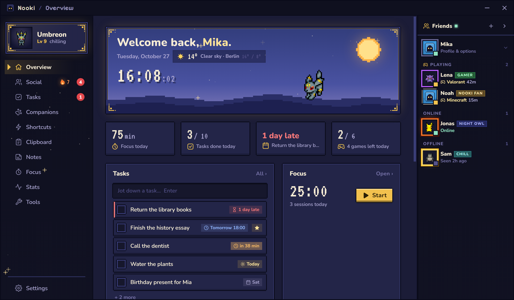

NewDeadlines for your tasks
A tiny pixel companion
A tiny pixel companion
for your taskbar.
It wanders around, naps when you're away and cheers when you get things done. And it keeps your tasks, notes, clipboard, a focus timer and daily puzzles with friends one click away.
Windows 10 & 11No account neededUpdates itselfYour data stays on your PC
Try it: click, drag, shift + click or hold right-click on your companion
Companions
Pick your companion
23 of them, each with its own colors and a trick of its own. Go on, pick one: the whole page (and the app) takes on its colors.
Features
Everything in one cozy place
One window for the small things of your day. Your companion keeps it company on the taskbar.

Daily games
Six puzzles a day, the same for everyone
Play in a few minutes, then see how your friends did. Keep your streak going and unlock frames and titles for your profile.
On your desktop
Your companion does more than look cute
It's the shortcut to everything. A few things to try once it's on your taskbar:
Install
Up and running in a minute
-
1
Download
One file, about 115 MB. No account, no sign-up.
Download Nooki -
2
Open it
Nooki isn't code-signed yet, so Windows may not know it. Click More info, then Run anyway.
-
3
Say hi
Your companion hops onto your taskbar. Double-click it to open Nooki. It starts with Windows and keeps itself up to date.
FAQ
Good questions
Is Nooki free?
Yes. Free to download, free to use, no ads and no account.
Why does Windows warn me when I open it?
Windows shows that warning for apps without a paid code-signing certificate, and Nooki doesn't have one yet. Click More info, then Run anyway. You only see it once.
The setup doesn't open. What now?
If you double-click it and only see a short loading cursor, Windows or an antivirus stopped it quietly. Three things help:
- Smart App Control. Open Windows Security → App & browser control → Smart App Control settings. When it's On, Windows blocks every app without a paid code-signing certificate, Nooki included, often with just a small notification. Turning it off lets Nooki run. On some Windows versions it can't be turned back on later, so that's your call.
- Antivirus. If you use one besides Windows Security, look in its quarantine or blocked list and allow
Nooki-Setup. - The ZIP version, no setup needed. Download the ZIP, right-click it → Extract all, then open Nooki.exe in that folder. It tells you when there's a new version.
What happens with my data?
Your tasks, notes, clipboard, screen time and listening stats stay on your PC, in %APPDATA%\Nooki. Friends is off until you turn it on. Then the Nooki server knows your name, your companion, your profile and your daily game results. Your friends see them, and Nooki's developer can look at profiles to keep an eye on things. The weather only sends your city's position to Open-Meteo.
Will it get in my way?
It's made not to. Nooki hides while a game or video runs fullscreen, and you can hide your companion from the tray icon anytime. Reminders and nudges can be switched off one by one in Settings.
How do updates work?
Nooki looks for a new version when it starts and every few hours. It downloads it quietly and installs it the next time Nooki starts. Your tasks, notes and companions stay.
How do I uninstall it?
Windows Settings → Apps → Installed apps → Nooki → Uninstall. Your data stays in %APPDATA%\Nooki, in case you come back. Delete that folder to remove it too.
Is there a version for Mac or Linux?
Not yet. Nooki is made for Windows 10 and 11.